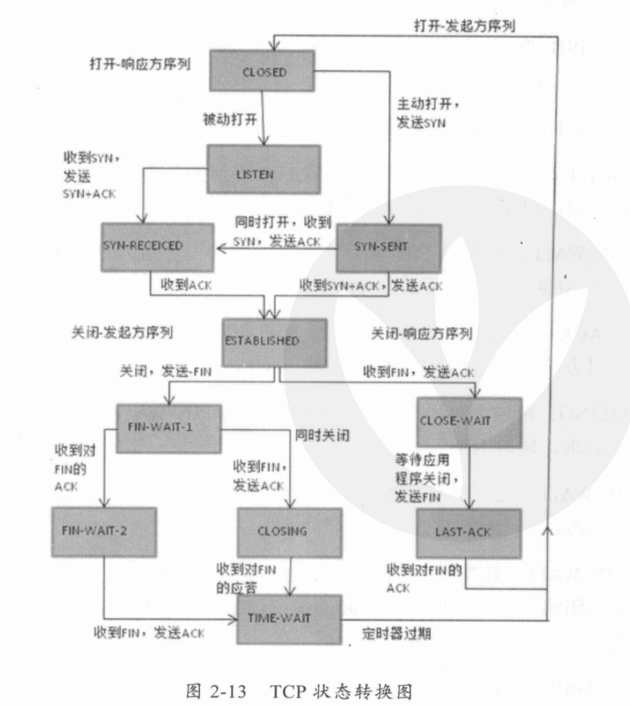

深入分析`Java I/O`的工作机制
不管是磁盘还是网络传输，最小的存储单元都是字节，而不是字符，所以I/O操作的都是字节而不是字符。但是我们的程序中通常操作的数据都是字符形式的。
基于字节的I/O操作接口输入和输出分别是InputStream和OutputStream
写字符的I/O操作接口涉及的是write(char[] buf, int off, int len)
读字符的I/O操作是read(char[] buf, int off, int len)
字节与字符的转化接口
数据持久化或网络传输都是以字节进行的，所以必须要有字符到字节或者字节到字符的转化。
几种访问文件的方式
读取和写入文件I/O操作都调用操作系统提供的接口，因为磁盘设备是由操作系统管理的，应用程序要访问物理设备只能通过系统调用的方式来工作。
只要是系统调用就可能存在内核空间地址和用户空间地址切换的问题，这是操作系统为了保护系统本身的运行安全而将内核程序运行使用的内存空间和用户程序运行的内存空间隔离造成的。这样虽然保证了内核程序运行的安全性，但是也必然存在数据可能需要从内核空间向用户空间复制的问题。
如果遇到非常耗时的操作，如磁盘I/O，数据从磁盘复制到内核空间，然后又从内核空间复制到用户空间，将会非常缓慢。这时操作系统为了加速I/O访问，在内核空间使用缓存机制，也就是将从磁盘读取的文件按照一定的组织方式进行缓存。
标准访问文件方式
当应用程序调用read()接口时，操作系统检查内核的告诉缓存中有没有需要的数据。如果已经缓存了，那么就直接从缓存中返回；如果没有，从磁盘中读取，然后缓存在操作系统的缓存中。
当应用程序调用write()接口时，将数据从用户地址空间复制到内核地址空间的缓存中。这时，对用户程序来说，写操作就已经完成了，至于什么时候再写到磁盘中是有操作系统决定的，除非显式地调用sync同步命令
直接I/O方式
应用程序直接访问磁盘数据，而不经过操作系统内核数据缓冲区，这样做的目的就是减少一次从内核缓冲区到用户程序缓存的数据复制。
这种访问文件的方式通常是在对数据的缓存管理由应用程序实现的数据库管理程序中。（如数据库管理系统中，系统明确地知道应该缓存哪些数据，应该失效哪些数据，还可以对一些热点数据做预加载，提前将热点数据加载到内存，可以加速数据的访问效率；而操作系统并不知道哪些是热点数据，只是简单地缓存最近一次从磁盘读取的数据）
缺点：如果访问的数据不在应用程序缓存中，那么每次数据都会直接从磁盘加载。这种直接加载会非常缓慢。
同步访问文件方式
数据的读取和写入都是同步操作的，它与标准访问文件方式不同的是，只有当数据被成功写到磁盘时才返回给应用程序成功标志。
这种访问文件方式性能比较差，只有在一些对数据安全性要求比较高的场景中才会使用，而且通常这种操作方式的硬件都是定制的。
异步访问文件方式
当访问数据的线程发出请求之后，线程会接着去处理其他事情，而不是阻塞等待，当请求的数据返回后继续处理下面的操作。这种访问文件的方式可以明显地提高应用程序的效率，但是不会改变访问文件的效率。
内存映射方式
内存映射方式是指操作系统将内存中的某一块区域与磁盘中的文件关联起来，当要访问内存中一段数据时，转换为访问文件的某一段数据。这种方式的目的同样是减少数据从内核空间缓存到用户空间缓存的数据复制操作，因为这两个空间的数据是共享的。
Java访问磁盘文件
数据在磁盘中的唯一最小描述就是文件，也就是说上层应用程序只能通过文件来操作磁盘上的数据，文件也是操作系统和磁盘驱动器交互的最小单元。
Java中通常的File并不代表一个真实存在的文件对象，当你指定一个路径描述符时，它就会返回一个代表这个路径的一个虚拟对象，这个可能是一个真实存在的文件或者是一个包含多个文件的目录。
如何从磁盘读取一段文本字符：
当传入一个文件路径时，将会根据这个路径创建一个File对象来标识这个文件，然后根据这个File对象创建真正读取文件的操作对象，这时将会真正创建一个关联真实存在的磁盘文件的文件描述符FileDescriptor，通过这个对象可以直接控制这个磁盘文件。
由于我们需要读取的是字符格式，所以需要StreamDecoder类将byte解码为char格式。
Java序列化
Java序列化就是将一个对象转化成一串二进制表示的字节数组，通过保存或转移这些字节数据来达到持久化的目的。需要持久化，对象必须继承java.io.Serializable接口。
反序列化则是相反的过程，将这个字节数组再重新构造成对象。
网络I/O工作机制
TCP状态转化

1、CLOSED：起始点，在超时或者连接关闭时进入此状态
2、LISTEN：Server端在等待连接时的状态，Server端为此要调用Scok
影响网络传输的因素
将一份数据从一个地方正确地传输到另一个地方所需要的时间我们称为响应时间。影响这个响应时间的因素有很多。
- 网络带宽
- 传输距离
TCP拥塞控制
TCP传输是一个停-等-停-等协议，传输放和接受方的步调要一致，要达到这个步调一致就要通过拥塞控制来调节。TCP在传输时会设定一个窗口（BDP，Brandwidth Delay Product），这个窗口的大小是由带宽和RTT（Round-Trip Time，数据在两端的来回时间，也就是响应时间）决定的。计算的公式是带宽（b/s） * RTT（s）。通过这个值可以得出理论上最优的TCP缓冲区的大小。
Java Socket的工作机制
Socket描述计算机之间完成相互通信的一种抽象功能。
打个比方，可以把Socket比作两个城市之间的交通工具，有了它，就可以在城市之间来回穿梭了、交通工具有多种，每种交通工具也有相应的交通规则。Socket也一样，也有多种。大部分情况我们使用的是基于TCP/IP的流套接字，它是一种稳定的通信协议。

主机A的应用程序要能和主机B的应用程序通信，必须通过Socket建立连接，而建立Socket连接必须由底层TCP/IP协议来建立TCP连接。建立TCP连接需要底层IP协议来寻址网络中的主机。网络层使用的IP协议可以帮助我们根据IP地址来找到目标主机，但是一台主机上可能运行着多个应用程序，如何才能与指定的应用程序通信就要通过TCP或UDP的地址，也就是端口号来指定了。
建立通信链路
当客户端要与服务端通信时，客户端首先要创建一个Socket实例，操作系统将为这个Socket实例分配一个没有被使用的本地端口号，并创建一个包含本地和远程地址和端口号的套接字数据结构，这个数据结构将一直保存在系统中直到这个连接关闭。
在创建Socket实例的构造函数正确返回之前，将要进行TCP的三次握手协议，TCP握手协议完成后，Socket实例对象将创建完成，否则将抛出IOException错误。